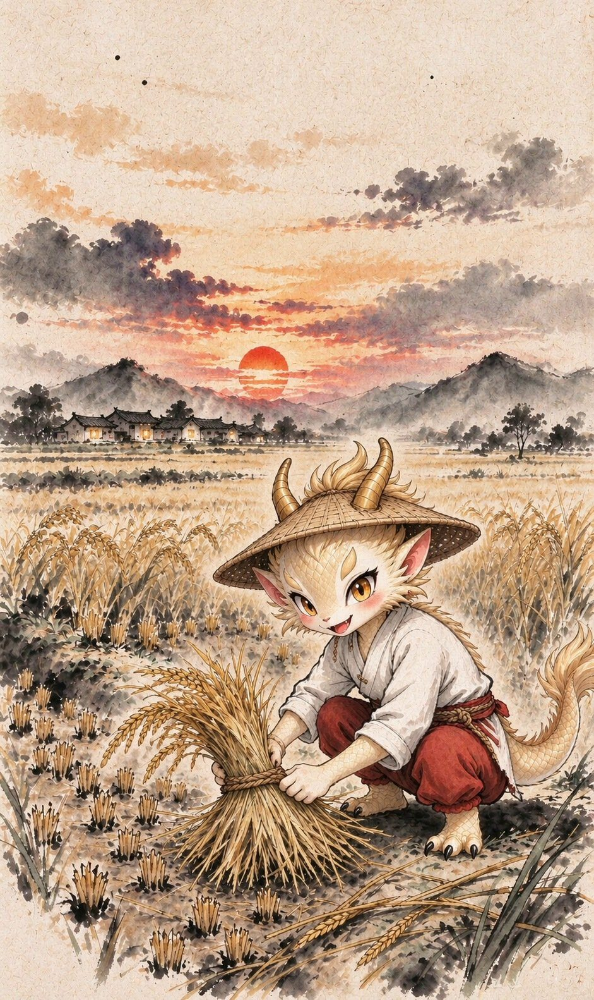

在成为龙之前，它只是一根稻草。谷子归仓之后，稻草留在田里。烧掉，是最省事的去处——一把火，一阵烟，也就没了。
湖口人不这么做。他们把它扎成一条龙，正月里抬着它穿村。
中国画里的龙，多是帝王的龙。这一条不是。
湖口人叫它「谷龙」——「谷」，是稻谷的谷。谷子归仓，稻草扎龙。它从田里来。
秋收之后扎龙，春节至元宵巡游。相传起于隋唐，盛于明清。1986 年编创《草龙舞》入选《中国民族民间舞蹈集成·江西卷》。